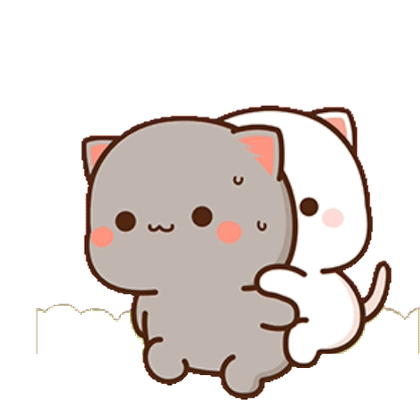
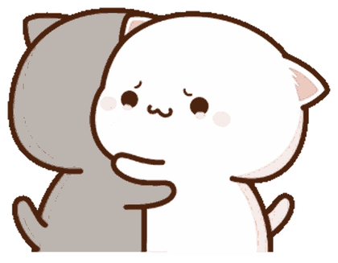

My Love,
I've been trying to find the right words, but I think I should start with the simplest ones. I'm sorry.
When you told me what you were feeling, I should have listened. Instead, there were times I took your words as something I needed to defend myself against. I was so caught up in how I felt that I didn't give you the patience or understanding you were asking for.
That wasn't fair. You were trying to be honest with someone who should make it safe for you to do that. I made those conversations more exhausting than they needed to be. I know that being heard shouldn't have been something you had to keep fighting for.
I also heard what you said about feeling like you were the only one putting effort into us. I don't want to brush that aside or tell you that I care as though saying it proves anything. I can see how my actions have made it harder for you to feel that we're facing things together.
I've leaned on my insecurity as an explanation for my reactions. It may explain where some of those feelings come from, but it doesn't excuse the way I've treated you. Those are things I need to work through without making you carry them for me.
I want to learn to sit with an uncomfortable conversation without immediately trying to win it. If I misunderstand you, I can ask instead of assuming. When I get defensive, I need to notice it, be accountable, and return to the conversation with care. I want to put in effort when life is ordinary, too, not only when I'm afraid of losing something.

I'm not writing this because I expect everything to be okay after you read it. This website doesn't change the past, and I don't want to make an apology into another thing you have to comfort me about.
I love you. I want you to feel safe telling me what matters to you. More than that, I want to become someone who listens closely enough that you don't have to repeat the same hurt over and over.
You don't have to forgive me right away, or respond before you're ready. I just wanted to acknowledge what you've been telling me, and take responsibility for the part I've played in making things difficult between us.
I'm sorry for making you feel alone in something that's meant to be shared by both of us.
With love,me ♡
